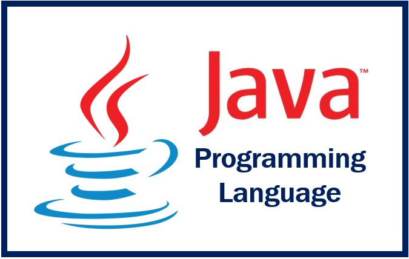
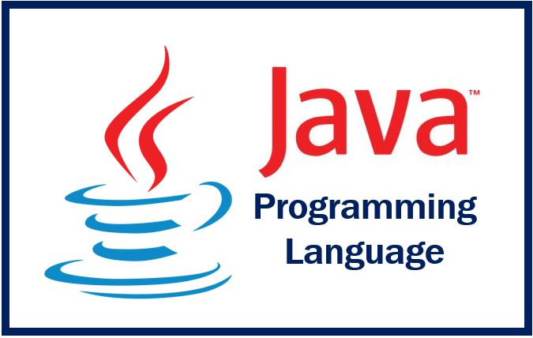
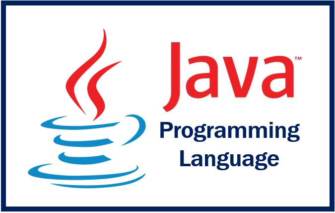

Hello I’m Lorenz Aaron M. Orozco and currently my skills are programming in Python, Java, C#, R and
database.[1] As an It student these are the skills that I’ve learned in UE.[2] However, the level of my skills are
only at an amateur level because I’ve only really known the basics on each one of them.[3] Python, Java, and
Database are the things that I’ve learned in my 1st year at UE.[4]
In the first semester we tackle
the Python programming language.[5] For me It’s hard at first because I have no knowledge and background in
programming.[6] However as the time goes by with practice, patience and willingness to learn you will eventually
know how to code in this programming language.[7] In our second semester we tackle Java and the Ms. Access which
is about the Database.[8] Both of them are hard because a new language means a new way of solving problems.[9] But
It’s much easier because I have a background in programming.[10] I just have to get used to the things that are
needed in order to run a code.[11] The difference between Python and Java is that Python is much simpler compared
to Java because there are no brackets needed in Python unlike Java.[12] We also tackle the Ms.Access it’s fun to do
because it’s much easier at first but it gets hard especially when we have to create a GUI.[13] We created a
GUI based on the database system that we created.[14]
In My Second year In UE I’ve learned C#,R, and My sql Database.[15]
The 2 of them are somehow easy because I have some knowledge in programming.[16] The C# is somehow like
Java and Mysql is like Ms.Access the only thing that is hard is the R language.[17] It’s because the R studio is
new for us.[18] Wherein It is somehow connected to statistics.[19] It was hard at first but it was taught to
us step by step by our professor.[20] Currently we tackle HTML and I hope that I will learn a lot from it.[21]

HOBBIES
The thing I like to do everyday is to rest and sleep.[1] If I've been given the opportunity to do this thing without
a doubt I will do it.[2] There are also times when I just watch netflix all day.[3] I like to binge watch long series.[4] Last year's
summer I watched Grey's anatomy.[5] It was a good series because it focuses on the life of a surgeon.[6] Currently it has 18 seasons
and I’ve already watched seasons 1-17. I also watch some anime and my favorite is watching One Piece because the main character’s
are enjoyable to watch.[7] Just seeing them together gives me happiness.[8] Also I really like it’s story because it focuses
on the adventure of the protagonist.[9] I also like watching movies, especially the Horror, and thriller genres.[10] But I only watch
Horror movies together with my friends and cousins.[11] It’s because I don't enjoy watching it alone and it should be watched
with someone you know.[12] There are a lot of movies released but as of the moment the movie that i enjoyed the most is spiderman: no way
home it’s because of the cast.[13] I also like to play online games when given a chance and whenever someone invites me.[14]
These games are Valorant, League of Legends, ML, and COD.[15] However I don't usually play all of the time because it really
depends on my mood.[16] Sometimes I just use social media like facebook and twitter.[17] These two are the social media that
I used the most because it keeps me updated on what is happening to my friends and the news here in the Philippines.[18]
Currently these are my hobbies.[19] I don't know if it will stay.[20] I guess only time will tell.[21]
INTEREST
I'm interested in many things.[1] Before I’m interested in becoming a scientist.[2] The reason for that is because
I want to know and I'm curious about what chemicals they mix to create something.[3] It fascinates me that’s why I wanted
to be a Scientist.[4] But as the time goes by my interest changes.[5] It changes to becoming an architect.[6] I want to become an
architect because they design buildings.[7] I want to design buildings but I realize that I'm not that good when it comes to
drawing and because of that I’ve changed my Interest in something close to an Architect and that is to become an Engineer.[8]
In High school I decided that I want to become an Engineer.[9] One of the reasons for that is because they say that there’s
money when you graduate as an engineer.[10] It’s one of the misconceptions that I have when growing up.[11] That’s why in SHS I choose
the STEM strand.[12] I want to know how hard the major subjects in the Engineering field.[13] Throughout my year in
SHS I must
admit that It’s hard because the math and science are different in High school and SHS.[14] It’s much harder but I’m determined
to pass and I’ve passed the exams.[15] However throughout my year in SHS I have friends in the ICT strand.[16] I'm always interested
in what they’re doing and because of that I choose to be an IT.[17] I’ve also heard many things about IT.[18] They say that there
are a lot of opportunities in IT and I agree with it.[19] It's because the technology that we have is always evolving and
getting bigger.[20] That’s why I think companies need IT graduates to manage their technologies.[21] Currently I'm a second year
student of UE taking the college program IT and right now I'm interested in learning more things about IT so that one day
I will be prepared for the job that I will choose.[22]

 
